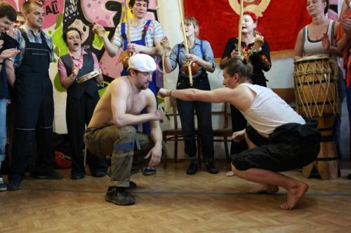

Стильные игры №3. Профсоюз. Фотоотчёт.
Мы на это не надеялись, но втайне этого ждали. Наш любимый с Тёмой проект «Стильные игры» пошел по капоэйрскому миру и попал в добрые минские руки.
20 мая 2012 года с подачи инициативных активистов из Axe Capoeira Минск состоялись третьи „Стильные игры“. Тема — «Профсоюз».
Взвейтесь кострами, синие ночи, мы — пионеры, дети рабочих!
Небольшой фотоотчет и многочисленные благодарности прилагаются.
Начинать — так с начала. Через Сета на нас с Тёмой вышел Андрей Seigiard, главный по Аше капоэйра в Минске, и попросил использовать наше название для своей минской тусовки. «И неплохо будет, если вы тоже приедете», говорит. „Ну отлично“, — подумали мы: как приехать, если Тёма в норвежском Конгсберге, а я в постоянных разъездах? Вдруг Тёма взял и купил билет в Минск из своей Норвегии. Так что мне ничего не осталось, как вернуться из Бельгии, перепаковать рюкзак и тут же собраться в новое путешествие.
Я было позвала с собой какой-то народ, но энтузиастов не нашла, кроме одной капоэйристки. Мы уже распечатали карты и собирались в пятницу вечером выходить на трассу и мчаться автостопом, как в один час все изменилось (в жизни так бывает, о да). Нашлась машина, нашелся мой проверенный дорогами водитель и друг, подобралась отличная компания — и вот в ночь с пятницы на субботу восхитительным девичьим коллективом мы загрузились в боевой Ford Fiesta и помчались по Е-95 (Кинчев с нами, разумеется).
Под нетленные суперхиты 90-х мы сумасшедшим балаганом пронеслись сквозь ночь и сотни километров, и в 6 утра уже распевали казацкие песни на подъезде к границе с братьями-славянами. К слову, казацкие песни сделали свое дело — в Минск мы приехали хриплые как пять Тони Варгасов, и пользы от нас в хоре не было никакой.
До границы мы успели попасть в небольшой дорожный переплет, так что в Витебске пришлось задержаться на ремонт.
За 200 километров до Минска, где нас уже с нетерпением ждали (Ребята спасибо, что были на связи. Ехать легче, когда чувствуешь, что тебя ждут) пришлось совершить звонок друзьям и попросить выслать на встречу спасительный отряд с запасным водителем. Минские парни неимоверно раскрутые! Взяли и подорвались нам навстречу на своем вороном, отмечая в смс километры до встречи. Примерно за 60 километров до Минска произошло торжественное соединение двух экипажей на трассе, знакомства, объятия, фотосессия на память.
Немного дорожных фотографий:
- раннее утро, Россия-матушка, мы умываемся росой и скачем по полям
- на заправке нашли себе «нового попутчика», который шокировал не одного соседа по трассе
- на каждой остановке любуемся мирными белорусскими пейзажами, пасторальной идиллией
- развал-схождение за бешеные белорусские деньги
- потеряли на трассе решетку от Форда, не выдержали и вернулись поискать, нашли и были счастливы
- озадачили парней неожиданной потери во времени и пространстве. Мальчики, разгадка проста и очевидна — мы готовились ко встрече с вами)))
- пам-па-ра-пааам, победный звук как у самолета компании Ryanair — мы встретились на трассе со своими минскими спасителями
И да, бобра мы не сбивали)))
Итак, Минск.
Я опущу вечер субботы и ночь — было много всего занятного и важного, но главное было в воскресенье.
Друзья наши минские, вы удивительные, творческие, активные, легкие на подъем. Вы так серьезно подошли к делу, что наши первые два мероприятия отдыхают по части реквизита и оргподготовки.
Портрет Ленина, стилизованная под кумач скатерть, квас и черный хлеб, роскошный флаг-ковер «Пролетарии всех стран, объединяйтесь» (взятый за паспорт под залог), вымпелы и красная веревка на беримбау, почетные грамоты, коллекционная подшивка „Наша Нива“ — где вы только взяли все это???
Костюмы — это отдельная победная песнь. Это был настоящий профсоюз, true пролетариат. Сварщики, рабочие со стройки, альпинисты, «уборщица», метелившая всех в роде шваброй, медсестра, девушка с разводным ключом, парни из Макдональдса, трактористы, маляры — вы все были восхитительные, яркие. Это были настоящие Стильные Игры.
Впрочем, все в фотографиях.
По моим ощущениям, капоэйра была всего лишь прикрытием для этого отчаянного развеселого цирка, но если уж оценивать саму капоэйру, то ее было мало. Мы привыкли играть вдоволь на Стильных играх, начиная с медленной анголы, потихоньку и неторопливо поднимая темп, чтобы рассмотреть людей, костюмы, насладиться моментами. В Минске все прошло очень быстро — минут 40 по внутренним часам. Еще просились какие-нибудь революционные песни, переложенные для беримбау, но, думаю, это наш с Темой промах — мы могли бы и озаботиться этим, но вместо этого совершенно расслабились и вели себя просто как приглашенные гости. Не могу лукавить — это было чертовски приятно — ни за что не отвечать и ничего не делать. Спасибо за это организаторам — вы все на себя взяли — и помещение, и печать открыток (я рада, что наша традиция продолжается и в этом), и вдохновение людей, и оформление всего этого безобразия.
Мне кажется, мы точно попали в стиль советского профсоюза!
Гип-гип ура!


